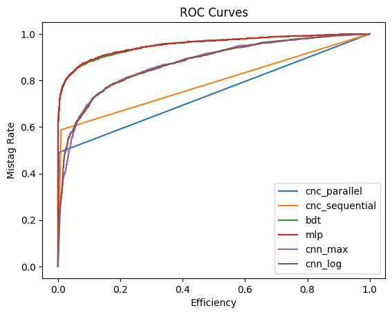
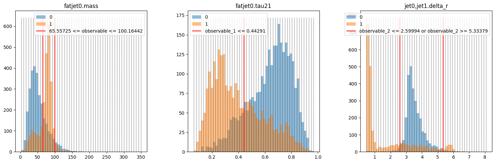
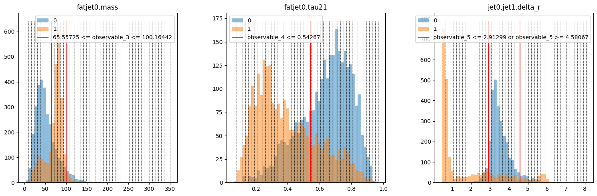
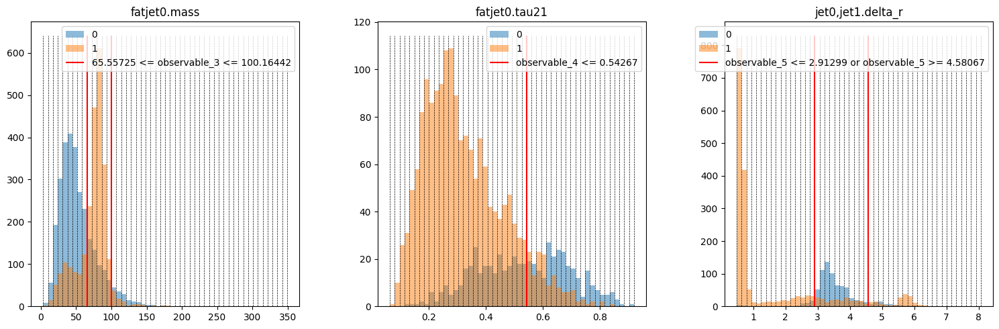

Applying Approaches#
This guide shows how to use the three built-in approaches to differentiate signal and background. HML streamlines the application of different approaches by adapting them in Keras-style (compile, fit, predict), which is simple to use.
Let's get started by importing the necessary modules:
# General
import numpy as np
import matplotlib.pyplot as plt
from keras import ops
from rich.table import Table
# Dataset
from sklearn.preprocessing import MinMaxScaler
from hml.datasets import load_dataset
# Approaches
from hml.approaches import CutAndCount as CNC
from hml.approaches import GradientBoostedDecisionTree as BDT
from hml.approaches import SimpleCNN as CNN
from hml.approaches import SimpleMLP as MLP
# Evaluation
from keras.metrics import Accuracy, AUC
from sklearn.metrics import roc_curve
from hml.metrics import MaxSignificance, RejectionAtEfficiency
# Save and load
from hml.approaches import load_approach
Then we use a dictionary to store the benchmark results and define a helper function to get result for each approach:
results = {}
def get_result(approach, x_test, y_test):
y_pred = approach.predict(x_test, verbose=0)
fpr, tpr, _ = roc_curve(y_test, y_pred[:, 1])
result = {
approach.name: {
"acc": ops.convert_to_numpy(
Accuracy()(y_test, y_pred.argmax(axis=1))
).item(),
"auc": ops.convert_to_numpy(AUC()(y_test, y_pred[:, 1])).item(),
"sig": ops.convert_to_numpy(MaxSignificance()(y_test, y_pred)).item(),
"r50": ops.convert_to_numpy(
RejectionAtEfficiency(0.5)(y_test, y_pred)
).item(),
"r99": ops.convert_to_numpy(
RejectionAtEfficiency(0.99)(y_test, y_pred)
).item(),
"fpr": fpr,
"tpr": tpr,
}
}
return result
Cut and count#
CutAndCount approach is a simple cut-based analysis. It uses a set of cuts on observables to separate signal and background. It has two topologies to apply cuts: parallel and sequential. The parallel topology applies all cuts simultaneously, while the sequential topology applies cuts one by one.
# Dataset
ds = load_dataset("./data/wjj_vs_qcd_set.ds")
x_train, y_train = ds.train.samples, ds.train.targets
x_test, y_test = ds.test.samples, ds.test.targets
# Training
cnc1 = CNC(
n_observables=3,
topology="parallel",
name="cnc_parallel",
)
cnc1.compile(
optimizer="adam",
loss="crossentropy",
metrics=["accuracy"],
run_eagerly=True,
)
cnc1.fit(x_train, y_train, batch_size=len(x_train))
# Training
cnc2 = CNC(
n_observables=3,
topology="sequential",
name="cnc_sequential",
)
cnc2.compile(
optimizer="adam",
loss="crossentropy",
metrics=["accuracy"],
run_eagerly=True,
)
cnc2.fit(x_train, y_train, batch_size=len(x_train))
We could see that the sequential topology has a better performance than the parallel topology. It's reasonable because the sequential topology applies cuts one by one, which determines the best cut according to the current distribution not the original one.
Now add the results to the dictionary:
Gradient boosted decision tree#
We adapt GradientBoostingClassifier from sklearn to work as a Keras model:
# Dataset
ds = load_dataset("./data/wjj_vs_qcd_set.ds")
x_train, y_train = ds.train.samples, ds.train.targets
x_test, y_test = ds.test.samples, ds.test.targets
- The
optimizerandlosshave any effect incompilebecausesklearnwill handle them internally. batch_sizeandepochsare irrelevant for a tree.- The progress bar displays the number of estimators rather than training steps.
Add the results to the dictionary:
Simple multi-layer perceptron#
Currently, HML provides a toy multi-layer perceptron to perform simple analysis:
# Dataset
ds = load_dataset("./data/wjj_vs_qcd_set.ds")
x_train, y_train = ds.train.samples, ds.train.targets
x_test, y_test = ds.test.samples, ds.test.targets
scaler = MinMaxScaler()
x_train = scaler.fit_transform(x_train)
x_test = scaler.transform(x_test)
Model: "mlp"
┏━━━━━━━━━━━━━━━━━━━━━━━━━━━━━━━━━┳━━━━━━━━━━━━━━━━━━━━━━━━┳━━━━━━━━━━━━━━━┓
┃ Layer (type) ┃ Output Shape ┃ Param # ┃
┡━━━━━━━━━━━━━━━━━━━━━━━━━━━━━━━━━╇━━━━━━━━━━━━━━━━━━━━━━━━╇━━━━━━━━━━━━━━━┩
│ dense_4 (Dense) │ (None, 32) │ 128 │
├─────────────────────────────────┼────────────────────────┼───────────────┤
│ dense_5 (Dense) │ (None, 64) │ 2,112 │
├─────────────────────────────────┼────────────────────────┼───────────────┤
│ dense_6 (Dense) │ (None, 32) │ 2,080 │
├─────────────────────────────────┼────────────────────────┼───────────────┤
│ dense_7 (Dense) │ (None, 2) │ 66 │
└─────────────────────────────────┴────────────────────────┴───────────────┘
Total params: 4,386 (17.13 KB)
Trainable params: 4,386 (17.13 KB)
Non-trainable params: 0 (0.00 B)
# Training
mlp.compile(loss="crossentropy", metrics=["accuracy"])
mlp.fit(x_train, y_train, batch_size=128, epochs=100)
results.update(get_result(mlp, x_test, y_test))
Epoch 1/100
99/99 ━━━━━━━━━━━━━━━━━━━━ 2s 7ms/step - accuracy: 0.7073 - loss: 0.5788
Epoch 2/100
99/99 ━━━━━━━━━━━━━━━━━━━━ 0s 3ms/step - accuracy: 0.8625 - loss: 0.3370
...
Epoch 99/100
99/99 ━━━━━━━━━━━━━━━━━━━━ 0s 3ms/step - accuracy: 0.8954 - loss: 0.2585
Epoch 100/100
99/99 ━━━━━━━━━━━━━━━━━━━━ 0s 3ms/step - accuracy: 0.9016 - loss: 0.2526
Simple convolutional neural network#
We also provide a toy CNN to perform simple analysis. There're two ways to normalize the images: using the maximum value of each image or applying log to each pixel.
# Dataset
ds = load_dataset("./data/wjj_vs_qcd_image.ds")
x_train, y_train = ds.train.samples, ds.train.targets
x_test, y_test = ds.test.samples, ds.test.targets
non_zero_train = x_train.reshape(x_train.shape[0], -1).sum(1) != 0
non_zero_test = x_test.reshape(x_test.shape[0], -1).sum(1) != 0
x_train, y_train = x_train[non_zero_train], y_train[non_zero_train]
x_test, y_test = x_test[non_zero_test], y_test[non_zero_test]
x_train = (
x_train.reshape(len(x_train), -1)
/ x_train.reshape(len(x_train), -1).max(1, keepdims=True)
).reshape(x_train.shape)
x_test = (
x_test.reshape(len(x_test), -1)
/ x_test.reshape(len(x_test), -1).max(1, keepdims=True)
).reshape(x_test.shape)
x_train = x_train[..., None]
x_test = x_test[..., None]
Model: "cnn_max"
┏━━━━━━━━━━━━━━━━━━━━━━━━━━━━━━━━━┳━━━━━━━━━━━━━━━━━━━━━━━━┳━━━━━━━━━━━━━━━┓
┃ Layer (type) ┃ Output Shape ┃ Param # ┃
┡━━━━━━━━━━━━━━━━━━━━━━━━━━━━━━━━━╇━━━━━━━━━━━━━━━━━━━━━━━━╇━━━━━━━━━━━━━━━┩
│ conv2d_3 (Conv2D) │ (None, 33, 33, 8) │ 80 │
├─────────────────────────────────┼────────────────────────┼───────────────┤
│ conv2d_4 (Conv2D) │ (None, 16, 16, 16) │ 1,168 │
├─────────────────────────────────┼────────────────────────┼───────────────┤
│ conv2d_5 (Conv2D) │ (None, 8, 8, 32) │ 4,640 │
├─────────────────────────────────┼────────────────────────┼───────────────┤
│ max_pooling2d_1 (MaxPooling2D) │ (None, 4, 4, 32) │ 0 │
├─────────────────────────────────┼────────────────────────┼───────────────┤
│ global_average_pooling2d_1 │ (None, 32) │ 0 │
│ (GlobalAveragePooling2D) │ │ │
├─────────────────────────────────┼────────────────────────┼───────────────┤
│ dropout_1 (Dropout) │ ? │ 0 │
├─────────────────────────────────┼────────────────────────┼───────────────┤
│ dense_10 (Dense) │ (None, 2) │ 66 │
├─────────────────────────────────┼────────────────────────┼───────────────┤
│ dense_11 (Dense) │ (None, 2) │ 6 │
└─────────────────────────────────┴────────────────────────┴───────────────┘
Total params: 5,960 (23.28 KB)
Trainable params: 5,960 (23.28 KB)
Non-trainable params: 0 (0.00 B)
# Training
cnn1.compile(
optimizer="adam",
loss="crossentropy",
metrics=["accuracy"],
)
cnn1.fit(
x_train,
y_train,
epochs=100,
batch_size=128,
)
results.update(get_result(cnn1, x_test, y_test))
Epoch 1/100
98/98 ━━━━━━━━━━━━━━━━━━━━ 4s 18ms/step - accuracy: 0.5386 - loss: 0.6891
Epoch 2/100
98/98 ━━━━━━━━━━━━━━━━━━━━ 0s 4ms/step - accuracy: 0.5982 - loss: 0.6491
...
Epoch 99/100
98/98 ━━━━━━━━━━━━━━━━━━━━ 0s 4ms/step - accuracy: 0.8107 - loss: 0.4378
Epoch 100/100
98/98 ━━━━━━━━━━━━━━━━━━━━ 0s 4ms/step - accuracy: 0.8104 - loss: 0.4392
# Dataset
ds = load_dataset("./data/wjj_vs_qcd_image.ds")
x_train, y_train = ds.train.samples, ds.train.targets
x_test, y_test = ds.test.samples, ds.test.targets
non_zero_train = x_train.reshape(x_train.shape[0], -1).sum(1) != 0
non_zero_test = x_test.reshape(x_test.shape[0], -1).sum(1) != 0
x_train, y_train = x_train[non_zero_train], y_train[non_zero_train]
x_test, y_test = x_test[non_zero_test], y_test[non_zero_test]
x_train = np.log(x_train + 1)
x_test = np.log(x_test + 1)
x_train = x_train[..., None]
x_test = x_test[..., None]
# Training
cnn2 = CNN(name="cnn_log", input_shape=x_train.shape[1:])
cnn2.compile(
optimizer="adam",
loss="crossentropy",
metrics=["accuracy"],
)
cnn2.fit(
x_train,
y_train,
epochs=100,
batch_size=128,
)
results.update(get_result(cnn2, x_test, y_test))
Epoch 1/100
98/98 ━━━━━━━━━━━━━━━━━━━━ 3s 13ms/step - accuracy: 0.5350 - loss: 0.6880
Epoch 2/100
98/98 ━━━━━━━━━━━━━━━━━━━━ 0s 4ms/step - accuracy: 0.6368 - loss: 0.6431
...
Epoch 99/100
98/98 ━━━━━━━━━━━━━━━━━━━━ 0s 4ms/step - accuracy: 0.8183 - loss: 0.4266
Epoch 100/100
98/98 ━━━━━━━━━━━━━━━━━━━━ 0s 4ms/step - accuracy: 0.8174 - loss: 0.4242
Evaluation#
table = Table(
"Name",
"ACC",
"AUC",
"Significance",
"R50",
"R99",
title="Approach Comparison",
)
for name, metrics in results.items():
table.add_row(
name,
f"{metrics['acc']:.6f}",
f"{metrics['auc']:.6f}",
f"{metrics['sig']:.6f}",
f"{metrics['r50']:.6f}",
f"{metrics['r99']:.6f}",
)
table
Approach Comparison
┏━━━━━━━━━━━━━━━━┳━━━━━━━━━━┳━━━━━━━━━━┳━━━━━━━━━━━━━━┳━━━━━━━━━━━┳━━━━━━━━━━┓
┃ Name ┃ ACC ┃ AUC ┃ Significance ┃ R50 ┃ R99 ┃
┡━━━━━━━━━━━━━━━━╇━━━━━━━━━━╇━━━━━━━━━━╇━━━━━━━━━━━━━━╇━━━━━━━━━━━╇━━━━━━━━━━┩
│ cnc_parallel │ 0.765086 │ 0.743599 │ 34.742661 │ 4.256874 │ 1.000000 │
│ cnc_sequential │ 0.805868 │ 0.788848 │ 37.796890 │ 5.151141 │ 1.000000 │
│ bdt │ 0.899797 │ 0.952525 │ 44.131214 │ 86.015831 │ 1.997420 │
│ mlp │ 0.897583 │ 0.952662 │ 44.056389 │ 96.767815 │ 1.953497 │
│ cnn_max │ 0.806482 │ 0.868102 │ 38.510403 │ 16.526314 │ 1.191518 │
│ cnn_log │ 0.808917 │ 0.873000 │ 38.833694 │ 17.852850 │ 1.232795 │
└────────────────┴──────────┴──────────┴──────────────┴───────────┴──────────┘
for name, metrics in results.items():
fpr = metrics["fpr"]
tpr = metrics["tpr"]
plt.plot(fpr, tpr, label=f"{name}")
plt.title("ROC Curves")
plt.xlabel("Efficiency")
plt.ylabel("Mistag Rate")
plt.legend()
plt.show()

Plot the cuts on distributions#
ds = load_dataset("./data/wjj_vs_qcd_set.ds")
x_train, y_train = ds.train.samples, ds.train.targets
x_test, y_test = ds.test.samples, ds.test.targets
fig, axs = plt.subplots(1, 3, figsize=(15, 5))
for i in range(x_train.shape[1]):
layer = cnc1.cut_layers[i]
observable = ds.feature_names[i]
bin_edges = np.linspace(
x_train[:, i].min(), x_train[:, i].max(), cnc1.n_bins + 1
)
axs[i].hist(x_test[:, i][y_test == 0], bins=bin_edges, alpha=0.5, label="0")
axs[i].hist(x_test[:, i][y_test == 1], bins=bin_edges, alpha=0.5, label="1")
y_min, y_max = axs[i].get_ylim()
axs[i].vlines(bin_edges, y_min, y_max, color="k", ls="dashed", lw=0.5)
if layer.case == 0:
axs[i].vlines(layer.cut_left, y_min, y_max, color="r", label=layer.cut)
elif layer.case == 1:
axs[i].vlines(layer.cut_right, y_min, y_max, color="r", label=layer.cut)
elif layer.case == 2:
axs[i].vlines(layer.cut_left, y_min, y_max, color="r", label=layer.cut)
axs[i].vlines(layer.cut_right, y_min, y_max, color="r")
else:
axs[i].vlines(layer.cut_left, y_min, y_max, color="r", label=layer.cut)
axs[i].vlines(layer.cut_right, y_min, y_max, color="r")
axs[i].set_title(f"{observable}")
axs[i].legend()
plt.tight_layout()
plt.show()

fig, axs = plt.subplots(1, 3, figsize=(15, 5))
for i in range(x_train.shape[1]):
layer = cnc2.cut_layers[i]
observable = ds.feature_names[i]
bin_edges = np.linspace(
x_train[:, i].min(), x_train[:, i].max(), cnc2.n_bins + 1
)
axs[i].hist(x_test[:, i][y_test == 0], bins=bin_edges, alpha=0.5, label="0")
axs[i].hist(x_test[:, i][y_test == 1], bins=bin_edges, alpha=0.5, label="1")
y_min, y_max = axs[i].get_ylim()
axs[i].vlines(bin_edges, y_min, y_max, color="k", ls="dashed", lw=0.5)
if layer.case == 0:
axs[i].vlines(layer.cut_left, y_min, y_max, color="r", label=layer.cut)
elif layer.case == 1:
axs[i].vlines(layer.cut_right, y_min, y_max, color="r", label=layer.cut)
elif layer.case == 2:
axs[i].vlines(layer.cut_left, y_min, y_max, color="r", label=layer.cut)
axs[i].vlines(layer.cut_right, y_min, y_max, color="r")
else:
axs[i].vlines(layer.cut_left, y_min, y_max, color="r", label=layer.cut)
axs[i].vlines(layer.cut_right, y_min, y_max, color="r")
axs[i].set_title(f"{observable}")
axs[i].legend()
plt.tight_layout()
plt.show()

cut_layers = cnc2.cut_layers
mask_train = ops.squeeze(ops.where(ops.ones(x_train.shape[0]) == 1))
mask_test = ops.squeeze(ops.where(ops.ones(x_test.shape[0]) == 1))
plt.figure(figsize=(15, 5))
for i in range(x_train.shape[1]):
plt.subplot(1, 3, i + 1)
layer = cut_layers[i]
masked_x_train = ops.convert_to_numpy(ops.take(x_train[:, i], mask_train))
masked_y_train = ops.convert_to_numpy(ops.take(y_train, mask_train))
bin_edges = np.linspace(masked_x_train.min(), masked_x_train.max(), 50 + 1)
mask_train = ops.squeeze(ops.where(cut_layers[i].apply_cut(x_train) == 1))
masked_x_test = ops.convert_to_numpy(ops.take(x_test[:, i], mask_test))
masked_y_test = ops.convert_to_numpy(ops.take(y_test, mask_test))
mask_test = ops.squeeze(ops.where(cut_layers[i].apply_cut(x_test) == 1))
plt.hist(masked_x_test[masked_y_test == 0], bins=bin_edges, alpha=0.5, label="0")
plt.hist(masked_x_test[masked_y_test == 1], bins=bin_edges, alpha=0.5, label="1")
y_min, y_max = plt.gca().get_ylim()
plt.vlines(bin_edges, y_min, y_max, color="k", ls="dashed", lw=0.5)
if layer.case == 0:
plt.vlines(layer.cut_left, y_min, y_max, color="r", label=layer.cut)
elif layer.case == 1:
plt.vlines(layer.cut_left, y_min, y_max, color="r", label=layer.cut)
elif layer.case == 2:
plt.vlines(layer.cut_left, y_min, y_max, color="r", label=layer.cut)
plt.vlines(layer.cut_right, y_min, y_max, color="r")
else:
plt.vlines(layer.cut_left, y_min, y_max, color="r", label=layer.cut)
plt.vlines(layer.cut_right, y_min, y_max, color="r")
plt.title(ds.feature_names[i])
plt.legend()
plt.tight_layout()
plt.show()

Save and load approaches#
After fit each approach, use save to save it to a file. To make folder structure clean, let’s create a folder named “checkpoints” first:
Then, in your codes or the notebook:
cnc1.save("./checkpoints/cnc_parallel.keras")
cnc2.save("./checkpoints/cnc_sequential.keras")
bdt.save("./checkpoints/bdt.pickle")
mlp.save("./checkpoints/mlp.keras")
cnn1.save("./checkpoints/cnn1.keras")
cnn2.save("./checkpoints/cnn2.keras")
Once again, we use load_approach to let HML decide which class it actually is, just like parse_observable, load_dataset:
loaded_cnc1 = load_approach("./checkpoints/cnc_parallel.keras")
loaded_cnc2 = load_approach("./checkpoints/cnc_sequential.keras")
loaded_bdt = load_approach("./checkpoints/bdt.pickle")
loaded_mlp = load_approach("./checkpoints/mlp.keras")
loaded_cnn1 = load_approach("./checkpoints/cnn1.keras")
loaded_cnn2 = load_approach("./checkpoints/cnn2.keras")
Check the doc to learn more about cuts, trees, and networks.